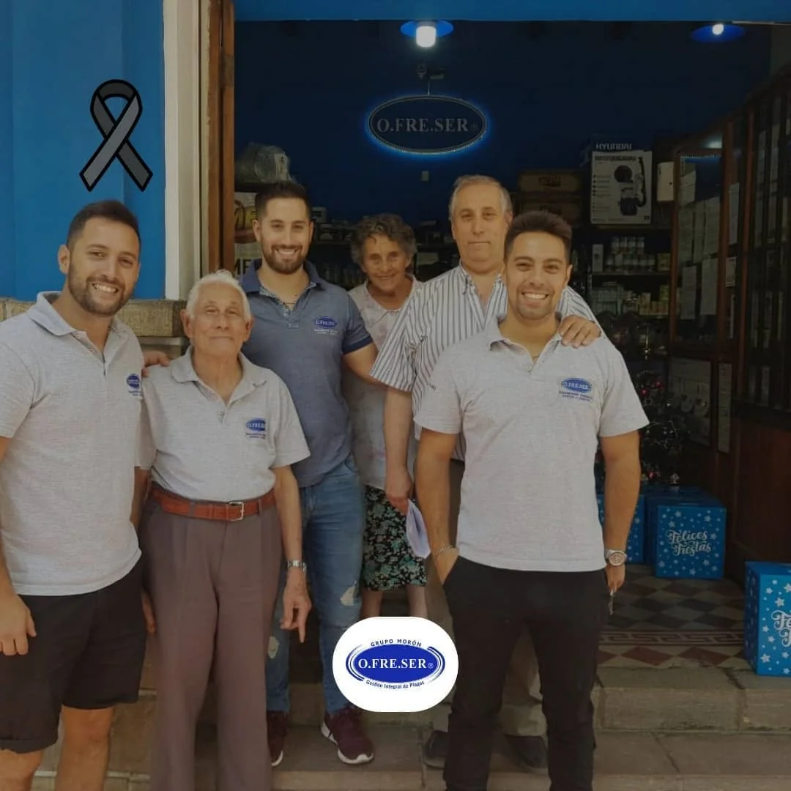

Nuestra historiaDe una empresa familiar a una organización con capacidad regional.
El crecimiento de O.FRE.SER estuvo marcado por la incorporación de mejores prácticas, profesionalización de procesos, formación del equipo, expansión hacia minería e industria y una apuesta sostenida por la calidad y la gestión ambiental.
OrigenUna empresa familiar vinculada al conocimiento técnico y al servicio en Salta.
ProfesionalizaciónProcedimientos, capacitación y organización por áreas.
ExpansiónMayor presencia en minería, industria y operaciones remotas.
ActualidadGestión certificada, trazabilidad, nuevo local y una estructura preparada para seguir creciendo.